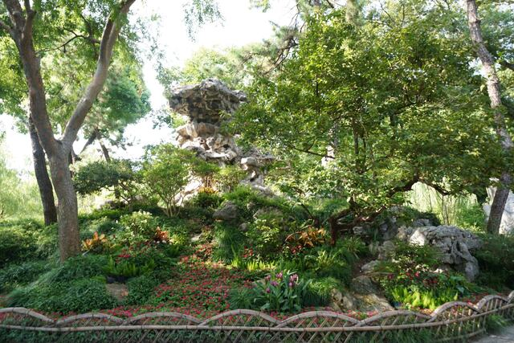
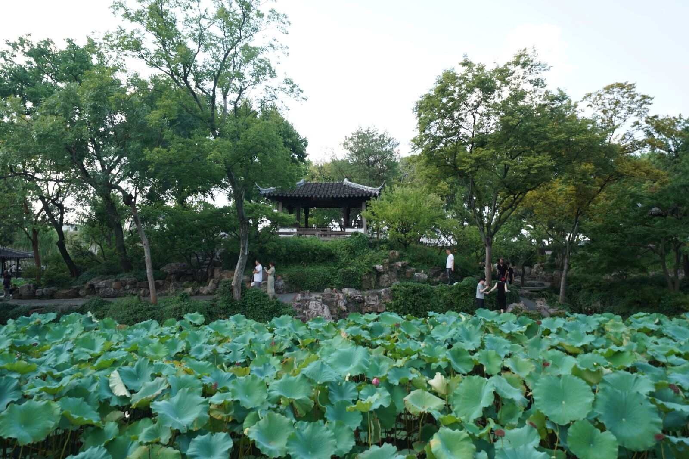
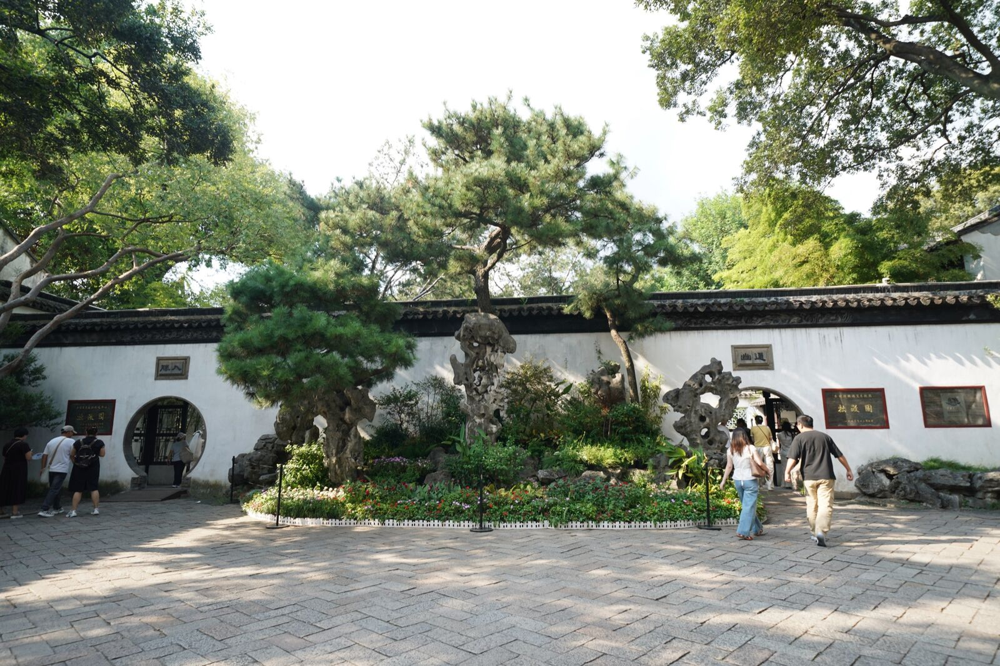
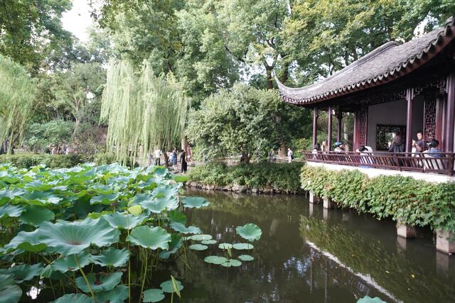
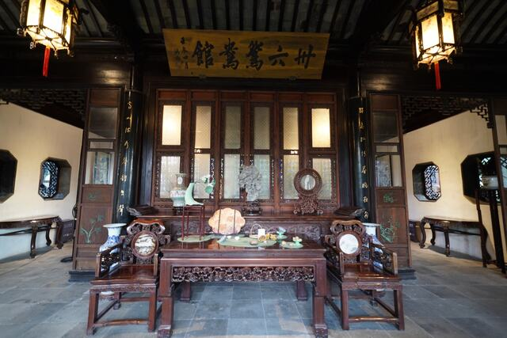

东园 · 归田园居
大草坪、黑松林，疏朗开阔。兰雪堂、缀云峰、天泉亭皆在此。

拙政园位于苏州东北街，始建于明正德四年（1509 年），是苏州现存最大的古典园林，占地约 78 亩，素有“中国园林之母”之称。
全园以水取胜，水面约占三分之一。房屋临水而建，回廊蜿蜒相连，人走在园中，像走在一幅展开的山水长卷里。粉墙黛瓦、色调素雅，追求“虽由人作，宛自天开”的自然之趣。
全园分东、中、西三部分：东部疏朗开阔，中部是全园精华，西部回廊精巧。1997 年列入《世界遗产名录》。

此亦拙者之为政也
潘岳《闲居赋》
“灌园鬻蔬，供朝夕之膳……此亦拙者之为政也。”
王献臣是明朝的监察御史，两次得罪权贵、两遭贬谪。回到苏州后，他买下城东北一片积水洼地，顺应地势挖池堆山、种树建堂，把“不适合盖房子”的缺陷，做成了“以水为中心”的园林。
“拙者之为政”——我这个笨人，浇浇菜园子，就是我的政事了。表面自嘲，其实是不服：不是我不会做官，是那个官场，我不屑于玩。
王献臣弃官回乡，在城东北积水洼地始建拙政园。
文徵明作《王氏拙政园记》，并绘园中三十一景图。
东部荒地归侍郎王心一，营造“归田园居”，兰雪堂即其主厅。
太平军攻占苏州，忠王李秀成以此园一部分建忠王府。
富商张履谦购得西部，营“补园”，建卅六鸳鸯馆。
列入《世界遗产名录》。

大草坪、黑松林，疏朗开阔。兰雪堂、缀云峰、天泉亭皆在此。

水面约占三分之一，远香堂环水而立，小飞虹廊桥跨水。

晚清遗韵。卅六鸳鸯馆一厅两用，与谁同坐轩小而精——“与谁同坐？明月清风我。”
从东园入口出发，一路向西。点开地图上的红点，看每一处的影像与故事。
拙政不是真的笨。
是一个聪明人发现，跟官场斗太累了，不如来浇菜。